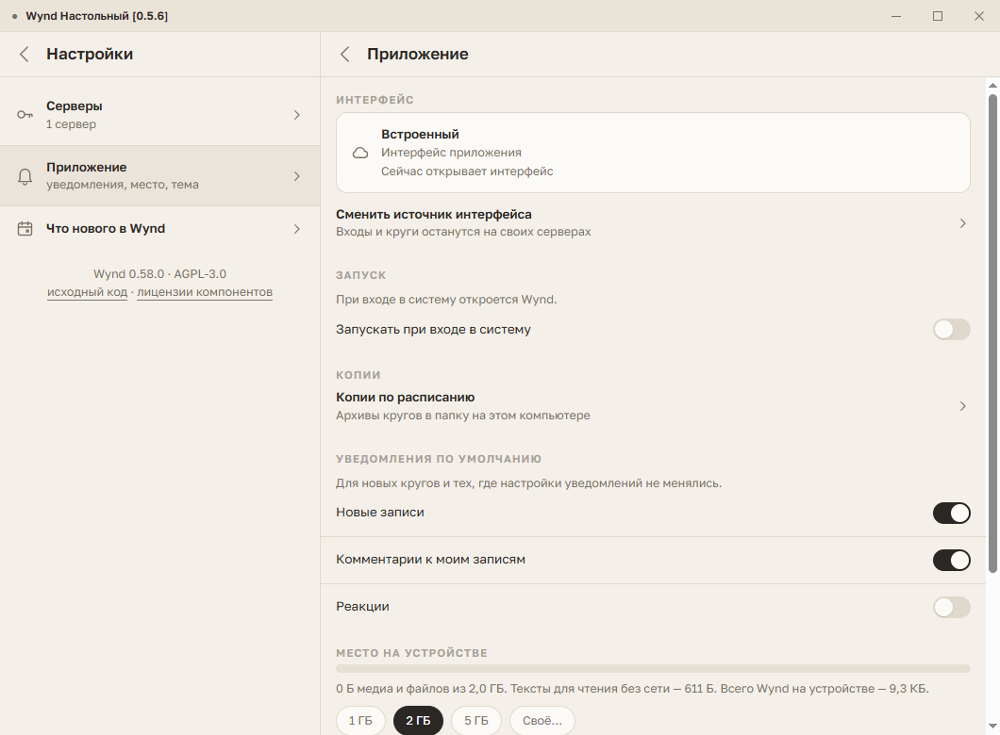
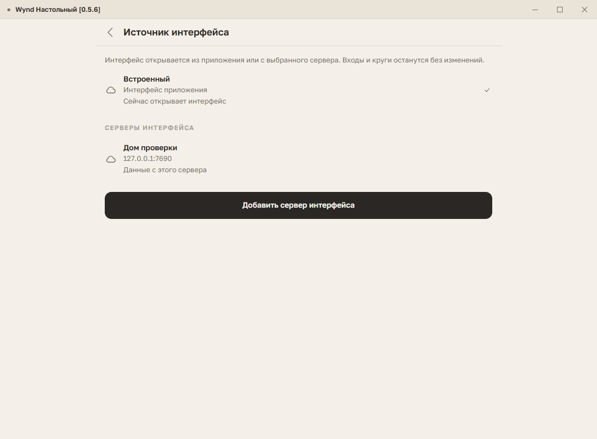
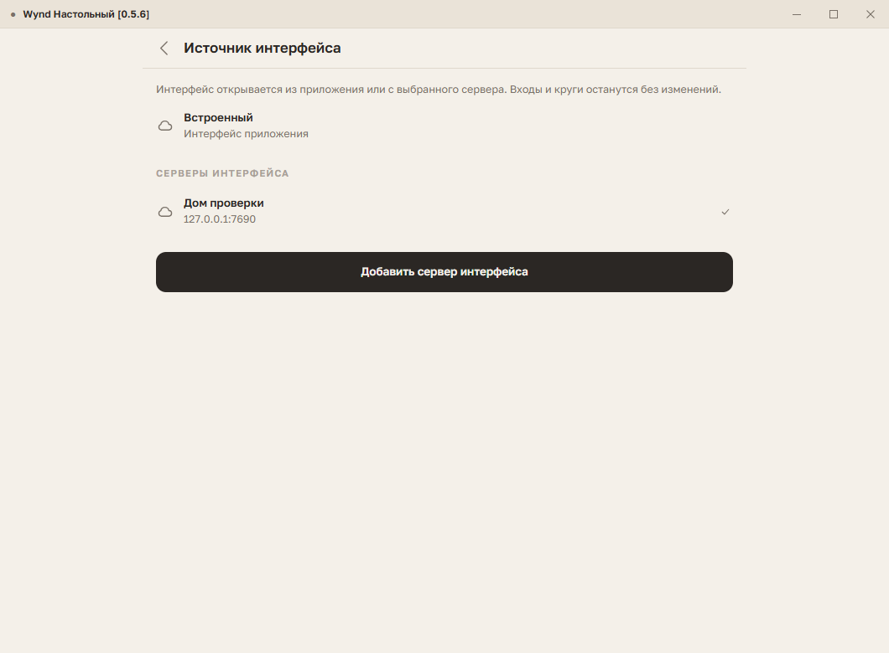

Вшитый интерфейс Настольного — кадры 27.11.2026
Настоящие снимки работающего окна (PrintWindow, 1060×780, светлая тема, масштаб 100 %),
собранного из проверяемого исходника. Стенд — локальный сервер 0.58.0 и синтетическая
учётная запись; servers.json и профиль временные. Кадры ждут приёмки
владельца.

«Настройки → Приложение → Интерфейс» во вшитом режиме: «Встроенный», «Интерфейс
приложения», «Сейчас открывает интерфейс»; строка «Сменить источник интерфейса».

Список источников: первой строкой «Встроенный» (отмечен), ниже «Дом проверки» —
«Данные с этого сервера», без крестика.

После выбора сервера: отмечен «Дом проверки», «Встроенный» не выбран. Возврат —
нажатием на «Встроенный».